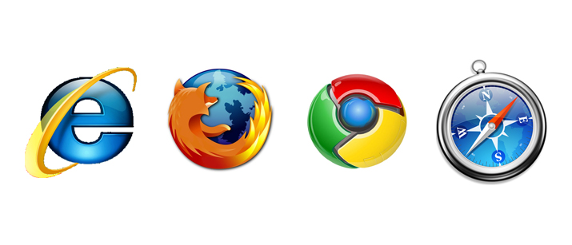

In this hour long tutorial, you will create a classic game, play it on any device, and share it with your friends. You will be using Berkeley’s Snap! to create classic arcade games like Whack-A-Mole. You’ll be introduced to some ideas about computational thinking and graphics. We'll be launching soon. Watch this space!
Help introduce your child, your students, or community members to programming, in just an hour!
If you have a web browser and Internet connection you are all set. Works with all modern web browsers.
It’s an hour-long introduction to computer science designed to demystify code and show students that everyone can learn the basics.
We are exicited to join with Code.org to support the Hour of Code. It’s the largest initiative of its kind: a campaign to recruit 10 million students to try computer science for one hour during Computer Science Education Week (Dec. 9-15).
We’re joining Microsoft, Google, Apple, Bill Gates, Mark Zuckerberg, the Boys & Girls Clubs of America, and over 100 others, to make history. We’re asking for your help, and there’s a reward for EVERY educator who participates. Start planning the Hour of Code for your classroom at http://hourofcode.com